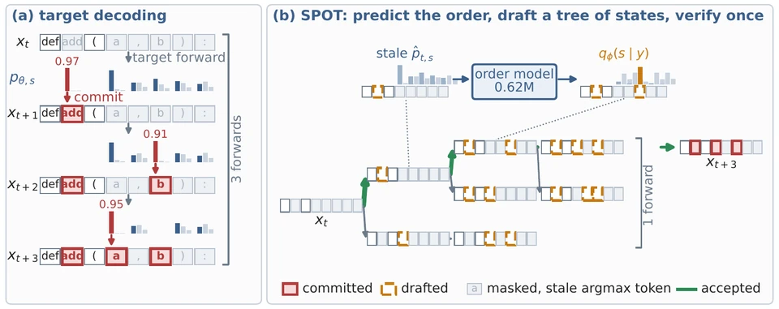

On the SPOT: Enhancing Speculative Decoding for Diffusion Language Models via Commit-Order Prediction
arXiv 2026Co-first author
SPOT predicts where a diffusion language model commits next, and the model verifies a whole tree of drafts in one pass: up to 6.8× fewer model passes and 3.2× the throughput of standard decoding, exact at any temperature.
arXiv Project page Code Drafters
BibTeX
@article{shlomi2026spot,
title = {On the {SPOT}: Enhancing Speculative Decoding for Diffusion Language Models via Commit-Order Prediction},
author = {Shlomi, Eliezer and Rahimi, Eliron and Mendelson, Avi and Baskin, Chaim},
journal = {arXiv preprint arXiv:2610.22543},
year = {2026},
doi = {10.48550/arXiv.2610.22543},
eprint = {2610.22543},
archivePrefix = {arXiv},
primaryClass = {cs.LG},
url = {https://arxiv.org/abs/2610.22543}
}